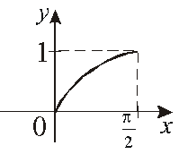
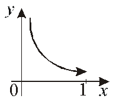

13.1.7. Свойства функций, непрерывных на отрезке
Если непрерывна на
непрерывна на  , то она ограничена на этом отрезке ( и
, то она ограничена на этом отрезке ( и  : ).
: ).
непрерывна на , то она ограничена на этом отрезке ( и : ).,
Требование непрерывности на отрезке является
обязательным, так как функция, непрерывная на интервале, может и не быть
ограниченной.
 непрерывна на интервале (0,
1), но не ограничена.
непрерывна на интервале (0,
1), но не ограничена.
Если непрерывна на , то она достигает на нем своих
точной верхней и точной нижней граней
непрерывна на , то она достигает на нем своих
точной верхней и точной нижней граней.
Докажем от противного.
Если точки не существует, то
,
и
.
Рассмотрим , функция – непрерывна на (по теореме о непрерывности сложной
функции).
(по теореме о непрерывности сложной
функции).Из непрерывности следует
ее ограниченность на ,
,,
 – верхняя грань,
тогда – не является точной верхней гранью.
Полученное противоречие доказывает теорему.
– верхняя грань,
тогда – не является точной верхней гранью.
Полученное противоречие доказывает теорему.1) ,.
2)  .
.
.1). Для интервалов  и полуинтервалов или теорема
не справедлива.
и полуинтервалов или теорема
не справедлива.
и полуинтервалов или теорема
не справедлива.. Значения и -
не достигаются на интервале .
2). Для , непрерывной на , и
можно назвать наименьшим и наибольшим
значениями функции на :
, непрерывной на , и
можно назвать наименьшим и наибольшим
значениями функции на :Если функция  непрерывна на и имеет на концах отрезка значения
непрерывна на и имеет на концах отрезка значения  и разных
знаков, то найдется точка
и разных
знаков, то найдется точка  такая, что.
такая, что.
непрерывна на и имеет на концах отрезка значения и разных
знаков, то найдется точка такая, что. Доказательство:
Пусть. Рассмотрим ,  -
ограничено сверху, например, числом . Покажем, что .
-
ограничено сверху, например, числом . Покажем, что .
-
ограничено сверху, например, числом . Покажем, что .Если бы , тогда по теореме
о сохранении знака непрерывной функции существовала бы  -окрестность
точки , но тогда бы не
являлась бы точной верхней гранью , где . Аналогично для остается ,
что и требовалось доказать.
-окрестность
точки , но тогда бы не
являлась бы точной верхней гранью , где . Аналогично для остается ,
что и требовалось доказать.
-окрестность
точки , но тогда бы не
являлась бы точной верхней гранью , где . Аналогично для остается ,
что и требовалось доказать.Теорема о прохождении непрерывной функции через любое
промежуточное значение. Если функция – непрерывна на , имеет на концах отрезка значения  и число
и число  расположено
между числами и
расположено
между числами и  :
:
 , то найдется точка такая, что .
, то найдется точка такая, что .
– непрерывна на , имеет на концах отрезка значения и число расположено
между числами и :
, то найдется точка такая, что .
Доказательство:
Рассмотрим . Введем .
.
– непрерывна на . По предыдущей теореме ,
. По предыдущей теореме ,,
что и требовалось доказать.
Теорема применяется для отыскания корней уравнения вида методом половинного деления отрезка.
Имеет ли корень уравнение ?
Рассмотрим функцию , которая
непрерывна на всей числовой оси, поскольку является суммой непрерывных функций.
Следовательно, внутри отрезка имеется,
по крайней мере, один корень исходного уравнения.
Принимает ли функция значение
внутри отрезка ?
Функция является непрерывной на . На
концах отрезка функция принимает числовые значения , .
Так как то такая, что